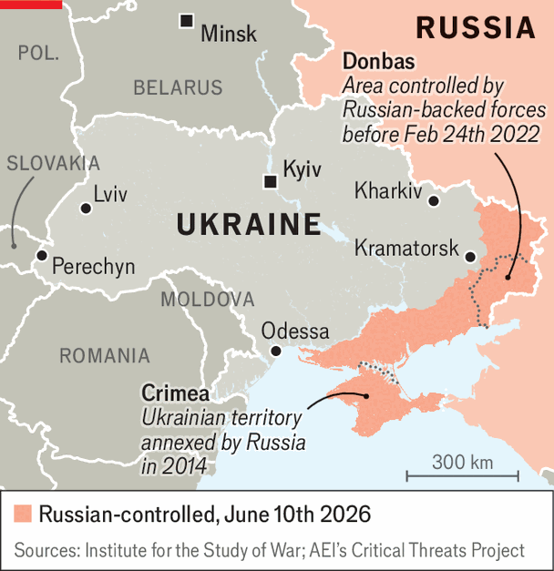
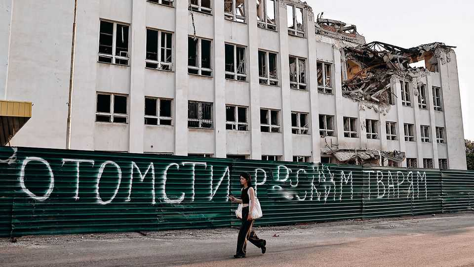

Ukraine is transplanting its industrial heart to the west
Soviet-built factory towns are in the wrong spot now that Russia is the enemy
June 11th 2026

FOR ALL the talk of Ukraine’s battlefield momentum, there is little optimism in Kramatorsk, the front-line city facing Russia’s main military effort. Vladimir Putin’s troops are 14km from the city’s edge, destroying everything that remains. Multi-tonne guided bombs hit regularly, crushing housing and industrial blocks. First-person-view drones hunt soldiers and civilians. On May 13th the city began evacuating its public monuments.

Over 1,000km away, in the foothills of the Carpathian mountains, another evacuation operation is under way. “New Kramatorsk” is the shorthand for an effort to transplant the city’s industrial heart, with its metalworking and machine-tooling factories, to Perechyn, a sleepy town of 7,000 people on Ukraine’s western border. The early stages began in 2022, not long after Russia’s full-scale invasion. It gathered pace as Russian lines moved closer. Few think there is much time left. NKMZ, Kramatorsk’s machine-building flagship, has just announced its closure and is dismissing or relocating its workers.
In Perechyn, a vast industrial park has risen from the fields. Blue-and-white corrugated-iron factories now dot the mountains. There is a new main road, with lorries grinding in and out; schools, kindergartens and a technical college; and several prefab housing complexes. More than 3,500 skilled workers have moved west. Nataliya Shevchenko was among the first, arriving in 2023 with her husband. “Perechyn was a village when we got here,” she says. “There wasn’t even a proper road.”
Most of the relocation is paid for by Kramatorsk’s firms, but the city administration is footing part of the bill. Serhiy Smirnov, Kramatorsk’s former deputy mayor, is based in Perechyn full-time, overseeing construction. Interviewed alongside Perechyn’s mayor, Ivan Pohorilyak, he describes the effort as a “proof of concept”: no one has tried to move an entire industrial “ecosystem” in Ukraine before.
Most of Ukraine’s industry was built on the “wrong” side of the country, near the border with Russia, at a time when it was assumed the enemy would come from the west. If Ukraine’s western regions are to support a new industrial core, they will need to build new infrastructure: roads, bridges, energy and gas networks. Mr Smirnov hopes the national government will help. The alternative, he says, is worse. “If our experienced engineers scatter—if they go to work in supermarkets, in shops—we lose essentially everything we have built.”
“Shoulder to Shoulder”, as the project is officially known, has brought the local economy new revenues and opportunities. “We are trying to create a hub for the highest-quality engineers in Ukraine,” says Mr Pohorilyak. A new technical college is training local youngsters, who draw well-paid internships in the factories.
But not every Perechyn native welcomes the easterners. There have been several protests. The initiative has not only relocated industry, but some of the risk too. In April a Russian drone struck an electricity substation alongside the industrial park after flying along the border with Slovakia. It was the first moment the sleepy town had seen war.

Svitlana, whose traditional hut stands directly opposite the industrial park, made a career change when it opened, becoming a skilled painter in one of the factories. She thinks the benefits may outweigh the cost. But her neighbour Vasyl, a labourer, complains that the Kramatorsk factory workers are shielded from the draft, while officers are stepping up the conscription of locals. “I don’t understand why we should fight for their land while they get to relax here,” he says. Yurii Kachur, a local entrepreneur who strove to stop his rented lavender fields being handed over for new housing, says locals struggle to be heard: “I understand these people didn’t come here by choice. But that doesn’t give them the right to walk over our heads.”
Ms Shevchenko says she understands the hostility. She rarely hears the complaints directly, but gets reports from a sympathetic local beautician. The animosity is unfair, she says, but human. Western Ukrainians have not lived through the war as Kramatorsk has; they have not seen their home town slowly destroyed, or left loved ones behind. “To explain to them why it is unfair is impossible,” she says. “May God grant they never understand.” ■
To stay on top of the biggest European stories, sign up to Café Europa, our weekly subscriber-only newsletter.